Data visualisation story
You should have a favourite…
Informative
Inspiring
Beautiful
Just like any other story, data stories can be…
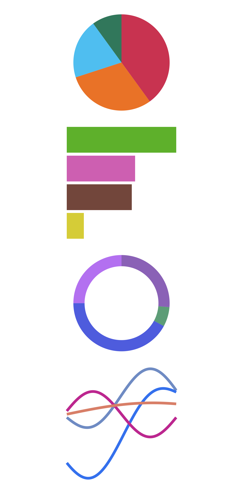
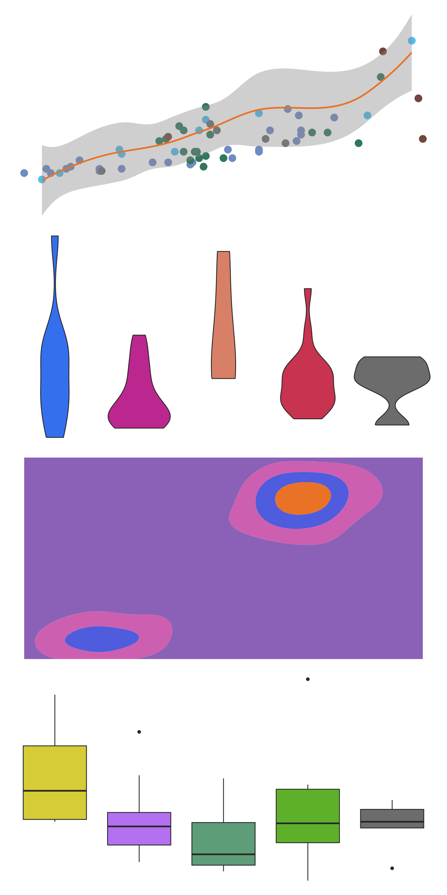
A data visualisation is just a graphical representation of data.
Dataviz are not necessarily intelligible - which is where data stories come in.
A data visualisation is just a graphical representation of data.
Dataviz are not necessarily intelligible - which is where data stories come in.
Data storytelling is about communicating. Data stories make dataviz meaningful and engaging.
I’ll demonstrate by sharing my favourite data story - “A Day in the Life of Americans” by Nathan Yau.
Sit back and take in this 60 second clip of Nathan Yau’s data story. While watching I want you to think about a few questions…
What’s the first thing you notice?
What questions do you have about
The data
The story
What do you think about doing?
Let me take you through some of the comments I’ve heard people make about this data story.
❤️ There are lots of bright, clear colours.
🛏️ No matter what time of day it is, there are always people sleeping.
🤔 There are fewer people working, and more people doing housework than you might expect for the early afternoon.
🚌 It’s really clever to put travelling as grey and in the middle.
Commuting is a liminal state.
You’re likely not in a traffic jam because you want to be.
😵💫 But wait a minute…
What does it mean when there’s a different coloured dot in a cluster?
Is there really someone sleeping while at work - are they using a nap pod?
🧐 Actually, how sure are we that this is exactly what people are doing at 4:20pm?
Who are these people?
Where is the data from?
🤯 This data visualisation doesn’t contain exactly what people are doing minute by minute.
The actual data from the American Time Use Survey is too complicated to understand in its raw form.
This is why I love Nathan Yau’s data visualisation.
It transforms this complex, messy, human data into something we can begin to understand and explore.
This is beautiful data storytelling.
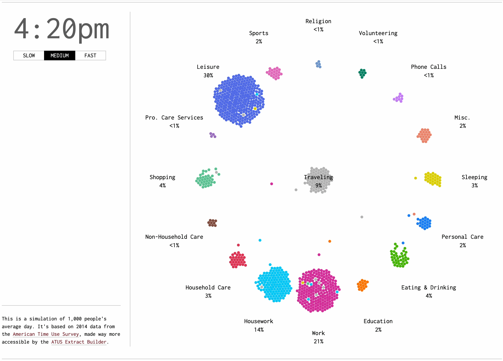
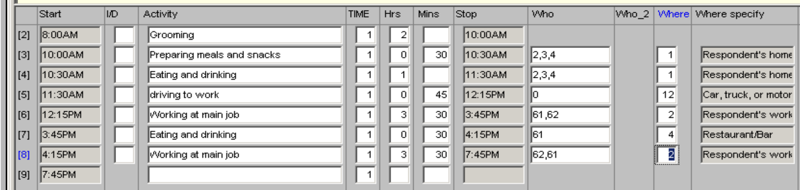
… be interactive
… take a data visualisation expert to build
… use a chart type you’ve never seen before
This doesn’t mean that great data stories need to…
This is my 2nd favourite data story.
It’s from an open-access paper on food pairing in regional cuisines.
It’s very much the opposite of the first data story
Nathan Yau’s “Day in the Life” was very much an enjoyable choose your own adventure data story.
This is very much a difficult read as bibliophiles might say. It’s dense.
Colour indicates ingredient type.
Size indicates prelevance in the 56,000 recipes studied in the paper it comes from.
Lines between ingredients indicate they share flavour chemicals.
That’s fascinating!
The research paper investigates which regional cuisines prefer their recipes to contain similar or disimilar flavours!
I love that this has been studied and that this visualisation tries to bring all that information together.
But. There are big data quality issues here.
Are “brown rice” and “rice” definitely two distinct ingredients?
Liver comes in three types - beef, chicken and undefined?
It’s a little unusual to have a data story with so many data quality issues as my 2nd favourite.
But it has personal importance to me. The data behind the chart was the first dataset I ever (struggled to) read into R.
It’s important when you choose your own favourite data stories that they resonate with you.
Just before I help you find your own favourite chart - here’s my 3rd favourite data story.
It’s by Caitlin Hudson and she first shared it on Twitter back in 2020.
I can’t find any fault with this data story. It’s understated beauty.
However. The maternity leave policies in the US are the worst amongst the world’s richest countries.
There are lots of faults to find with that.
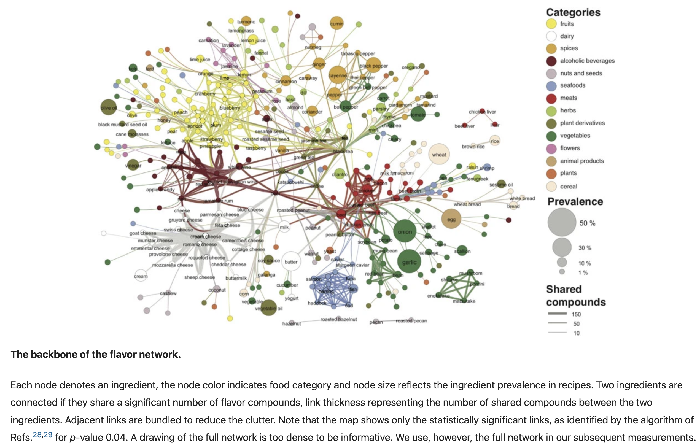
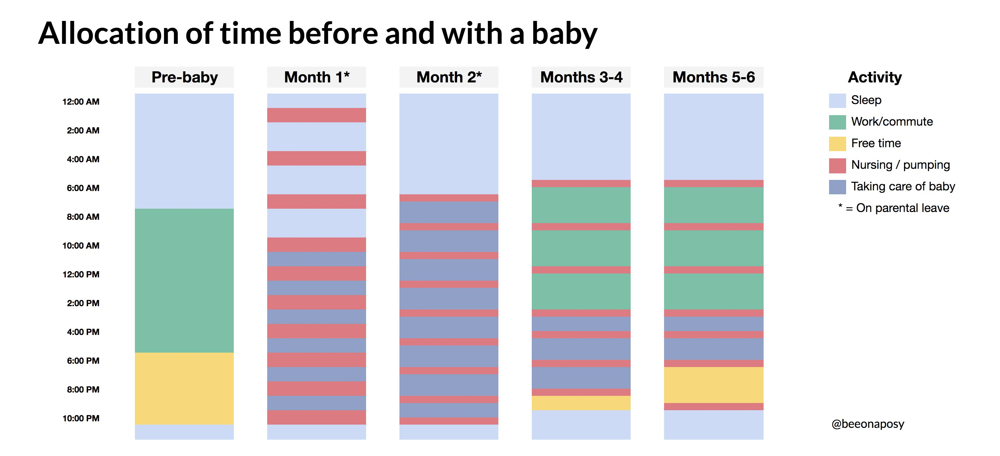
Let’s help you find your favourite data story!
TidyTuesday is an incredible project that collates free, open-source datasets every week.
Folks are then invited to visualise the datasets and share them with the hashtag #tidytuesday on social media.
Often the datasets cover important social and political topics
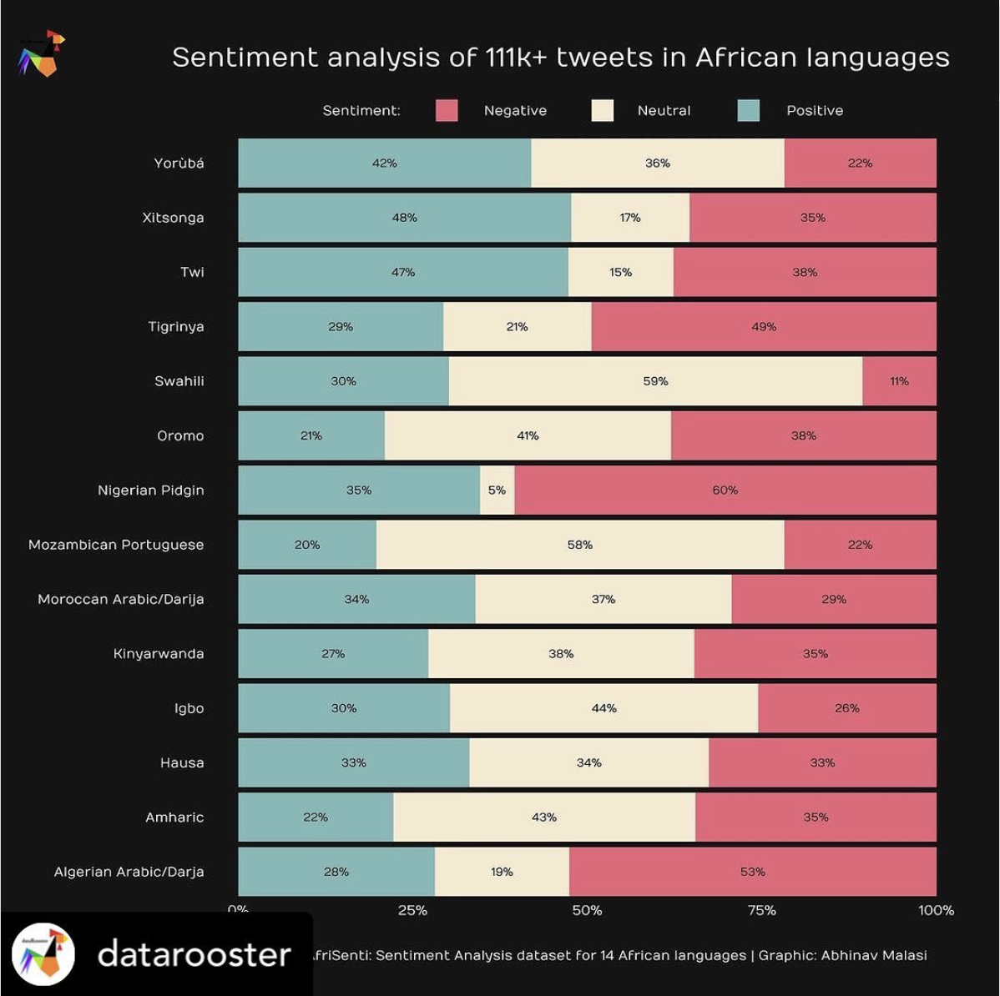
From Steven Ponce
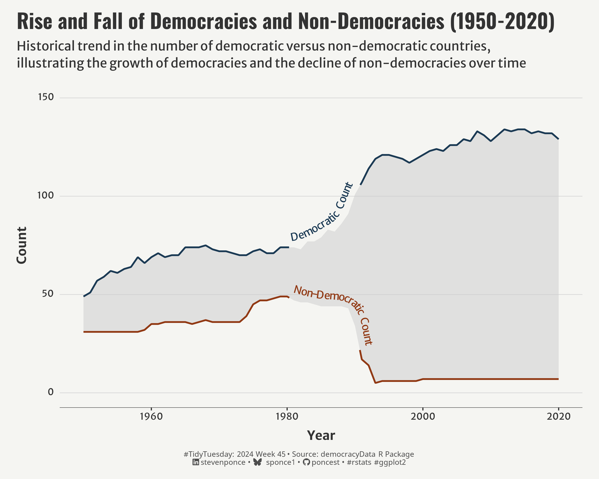
From Abhinav Malasi, @datarooster
There are plenty of fun datasets…
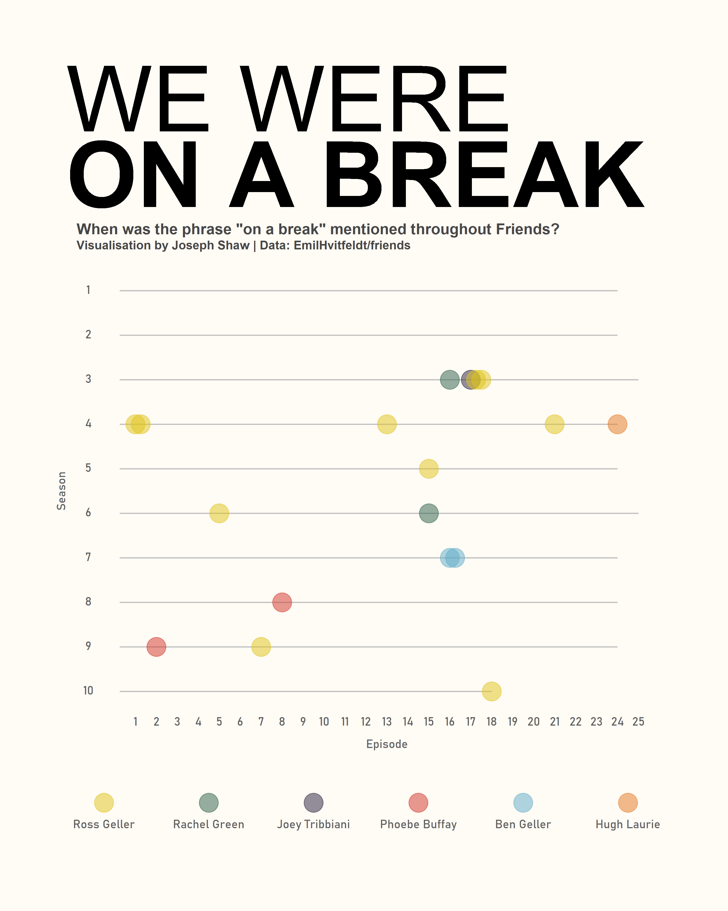
From Joe Shaw, @JosephShaw_
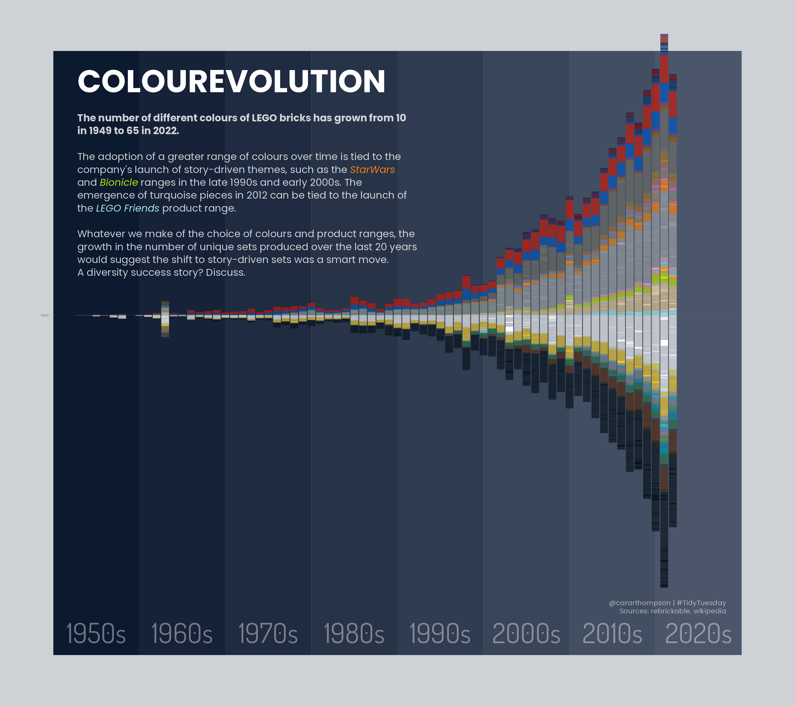
From Cara Thompson, @cararthompson
And there are also… unusual datasets
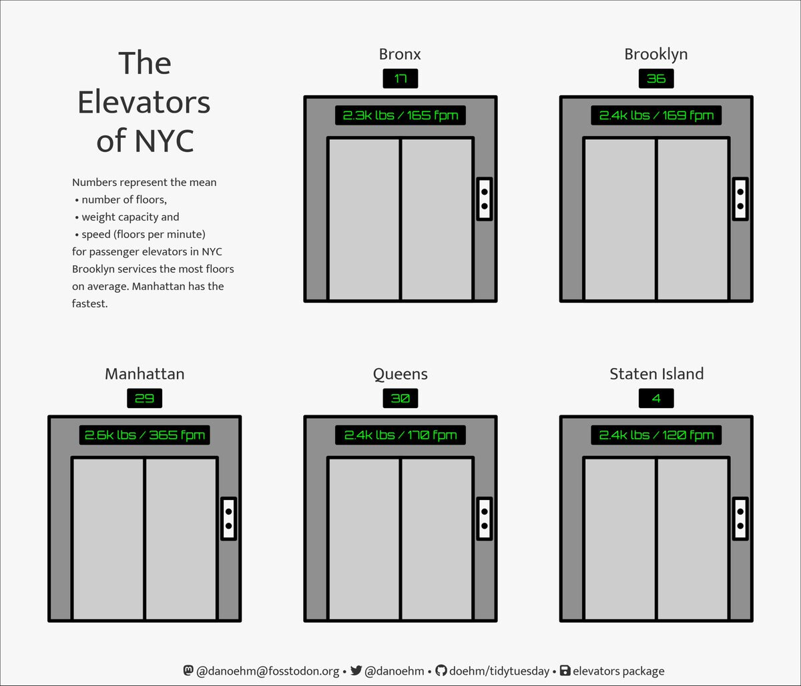
From Dan Oehm, @danoehm
The TudyTuesday project isn’t just a great place for you to find your favourite data story.
It’s also an opportunity for you to flex your storytelling capabilities! Consider joining the free, friendly and open-source Data Science Learning Community.
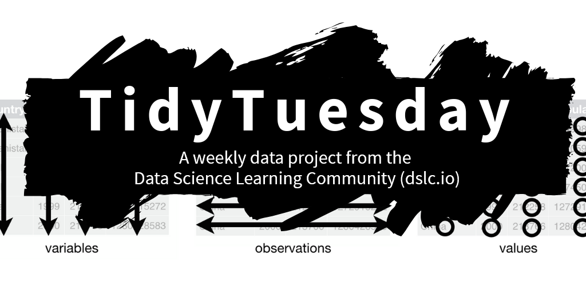
‘A Day in the Life’ was created by Nathan Yau.
FlowingData provides membership that includes tutorials on how to make similar charts.
- Thanks Cara!
This scrollytelling article was written by Charlotte Hadley as an entry in the 2024 Closeread competition - the code is on GitHubXXXX.
You can findon BlueSky and LinkedIn, if you’ve been inspired to find a favourite data story please let her know with #favedatastory.
Closeread is a scrollytelling Quarto format.
Not heard of Quarto?! It’s incredible. Use R, Python or Julia to build rich HTML, PDF or even Microsoft Office formatted reports - learn more at quarto.org.
Quarto and the Closeread competition are sponsored by Posit, PBC